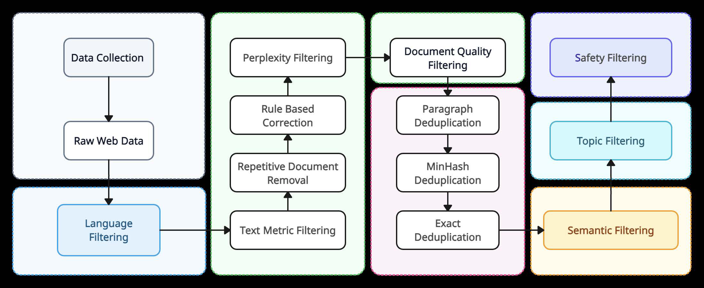
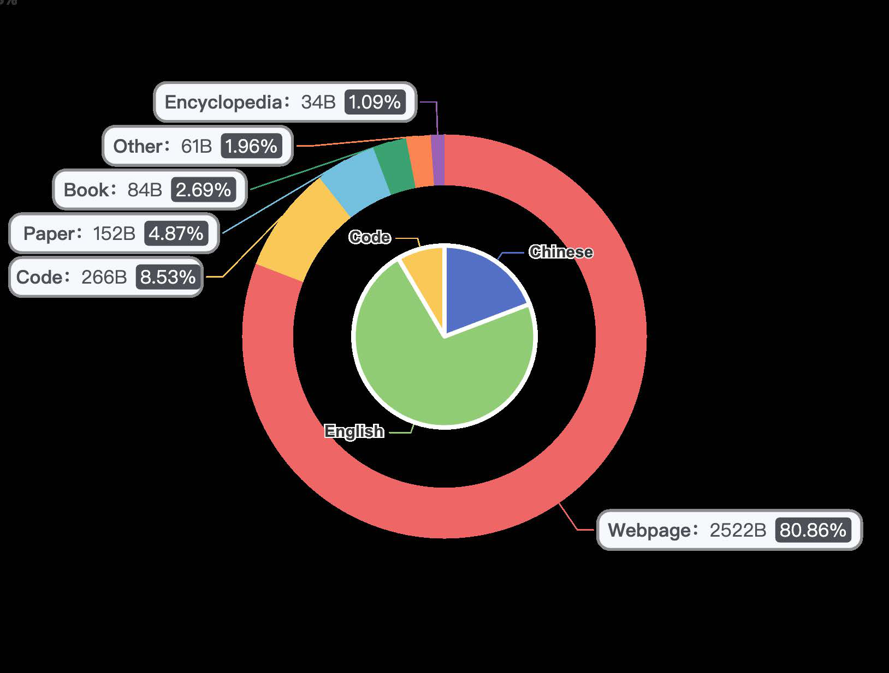
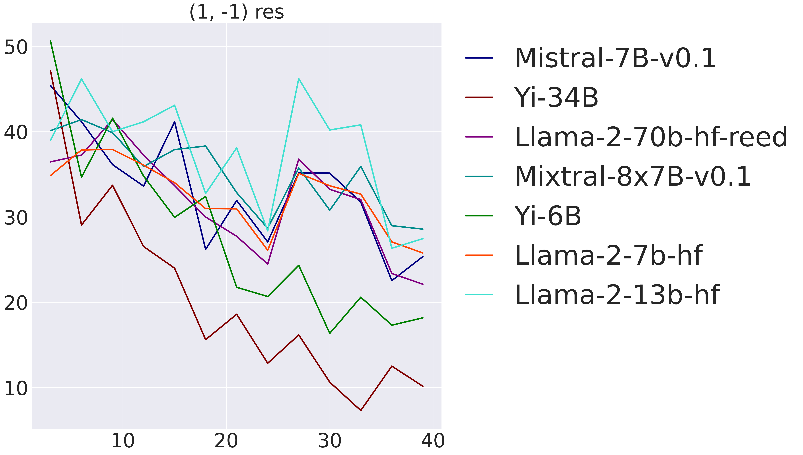
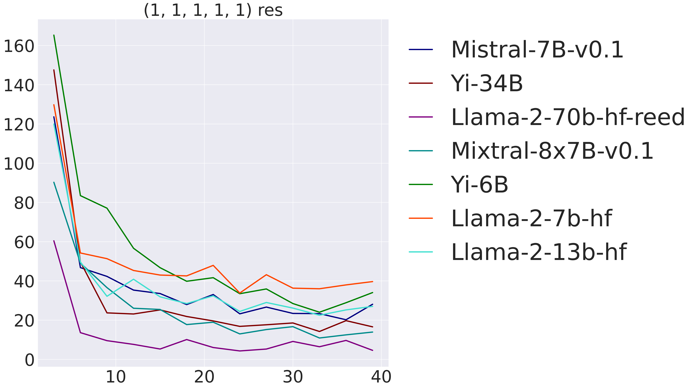
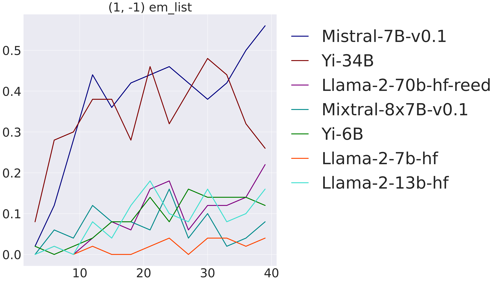
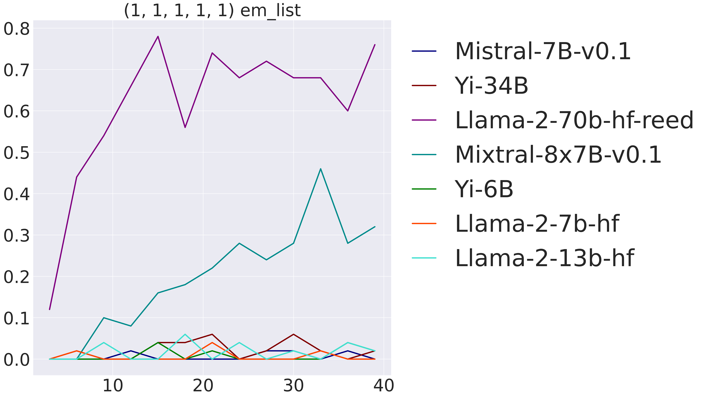
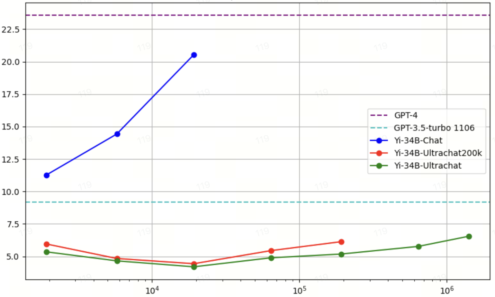
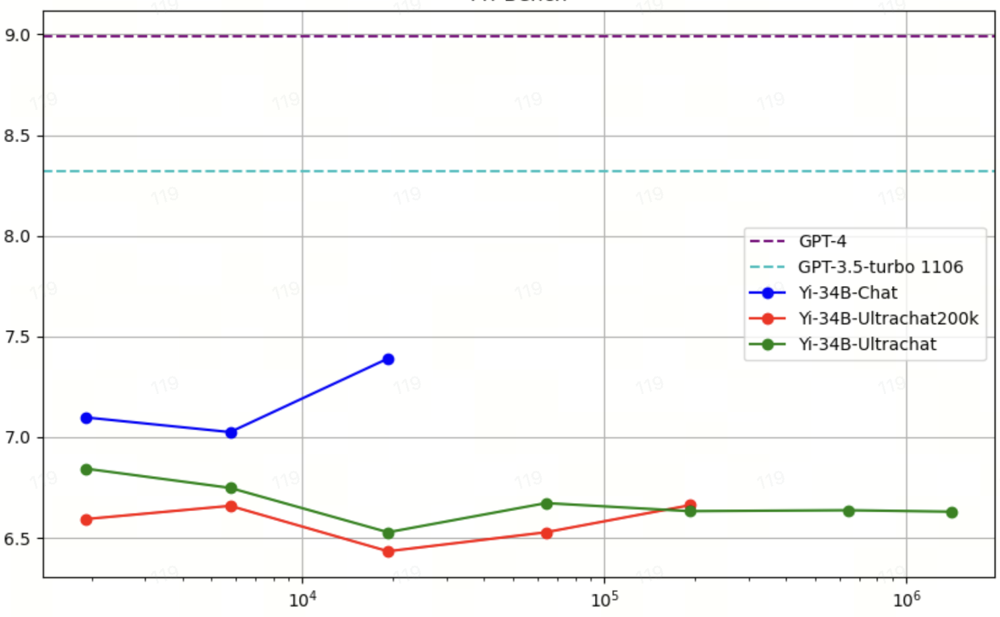
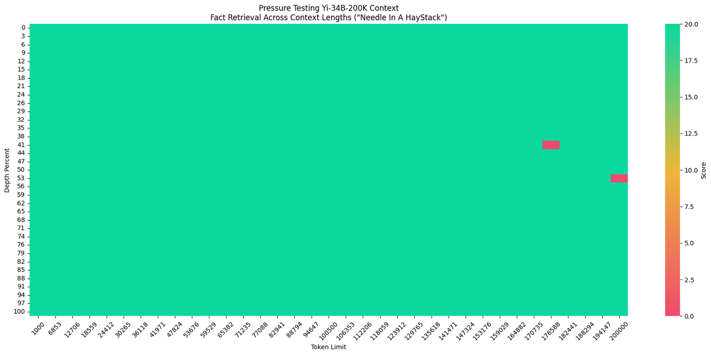

一句话总结:Yi-6B / 34B 是 01.AI 从头训练的中英双语开源基座,在 3.1T tokens 上用极致数据清洗(级联过滤 + 多层去重)与 LLaMA 风格 Transformer 架构(GQA + SwiGLU + RoPE ABF)训练而成,搭配 <10K 条人工精打磨 SFT 数据,使 34B 模型在 MMLU、AlpacaEval、Chatbot Arena 等基准上对标 GPT-3.5——核心信念是"数据质量胜过参数体量"。
🎯 面试考点(高频):

① 图说明:Yi 预训练数据清洗的级联流水线全景图——从 Common Crawl 原始网页一路过滤到最终训练语料。流程顺序大致为:语言识别 → 启发式规则过滤(URL / 黑名单 / garbled / 重复 n-gram / PII)→ 四个 learned 过滤器(Perplexity / Quality / Coherence / Safety)→ 语义聚类 → 段落 MinHash 去重 + 子文档精确匹配去重 → 主题模型下采样。
② 关键数据 / 对照:论文明说 Yi 的删除率显著高于 CCNet / RefinedWeb / RedPajama;Quality Scorer 用 Wikipedia 风格做正样本;Safety Scorer 单独负责暴力 / 色情 / 政治宣传;最后还有 topic model 把广告类下采样以提升信息密度。
③ 启示:这是全文最重要的一图,贯彻"数据质量 > 数据量"的核心信念——Yi 团队明说宁要 3T 严过滤,不要 10T 粗放。每一步都是过滤而非生成:与 Phi 系合成数据路线对立,与 LLaMA / Falcon 同属"挖海量原始网页 + 精筛"路线,但筛得更狠。面试时务必能说全这条 cascade 的顺序与各阶段职责。

① 图说明:Yi 的 3.1T 预训练数据混合饼图——按来源拆分,覆盖网页、书籍、代码、学术论文等;中英双语且语种比例显著区别于 LLaMA / Falcon 的英语为主。
② 关键数据 / 对照:论文标注 Yi 与已知配方(LLaMA、Falcon)的两个核心差异:① 双语;② 由于 Fig.1 那套更严格的清洗 pipeline,平均质量更高。Common Crawl 系网页占大头,但经过四层 learned filter 后真正进入训练的是"高纯度子集"。
③ 启示:该图是 Yi 中文能力的"原料账单"。它解释了为何 Yi-34B 能在 C-Eval / CMMLU / Gaokao 上对标甚至超过 GPT-4(中文知识)——预训练就在大量高质中文上下投入;而 LLaMA 2 中文表现差是先天数据问题,后训练补不回来。这也是后来 Qwen、DeepSeek 等国产模型的共同方法论。

① 图说明:In-context learning 探针实验之 A 部分。任务:让模型从 few-shot 演示中隐式推断一个线性函数 $y = w_1 x_1 + w_2 x_2 + \ldots + w_n x_n$ 的系数。这里系数为 $[1, -1]$(两维)。
② 关键数据 / 对照:两种度量:连续型 $|y - y^*|$(差值)与离散型 exact match($y == y^*$)。结果:两维系数下 Yi-34B 与 LLaMA-2 70B 在 exact match 上表现最好。
③ 启示:Yi 用这套自构造任务避开"基准污染"——加减法是 confounder,所以排除掉;关注的是函数推断本身。能说明 Yi-34B 即便规模比 LLaMA-2 70B 小一半,也能在结构化推理任务上打平。

① 图说明:Fig.3 的 B 部分,把线性系数扩展到 $[1,1,1,1,1]$ 五维。任务难度陡增,因为同时要推断 5 个隐藏权重。
② 关键数据 / 对照:只有足够大的模型(LLaMA-2 70B、Mixtral 8x7B)在 exact match 上才达到有意义的分数;差值度量则更连续,小模型差值也会逐步缩小。
③ 启示:这是对"emergent ability 是否是度量伪影"(Schaeffer et al. 2023)的一次实验回应——离散度量(exact match)上确实呈现涌现型跳跃,连续度量(差值)则是平滑的。Yi 借此为继续 scaling 留出空间:34B 还没解锁这种"复杂函数 in-context 推断"。

① 图说明:Fig.3 的 A2 子图。任务与 fig_3 相同——从 few-shot 推断线性系数 $[w_1, w_2]=[1, -1]$——但这里画的是离散度量 exact match($y == y^*$)随 #Shots(横轴 2 → 40)的曲线,纵轴为命中率(0 → 0.55)。
② 关键数据 / 对照:Mistral-7B-v0.1(深蓝)与 Yi-34B(红)显著领先,在 25-40 shot 区间冲到 $\approx 0.45\!-\!0.55$;Llama-2-70b、Mixtral-8x7B、Yi-6B、Llama-2-13b 聚在 $\sim 0.1\!-\!0.2$;Llama-2-7b 几乎为 0。注意 Yi-34B 用 exact match 反而比 Llama-2-70B 高——比连续度量(fig_3)上的优势更明显。
③ 启示:这正是 emergent ability 在离散度量上才呈现"跳跃"的实证。Yi-34B 在 2 系数任务上能 exact-match,说明 in-context 函数推断的"全对"能力已涌现;但小模型(Yi-6B / Llama-2-7B)即便在 fig_3 上差值在缩小,exact match 仍卡在零附近——支持 Schaeffer 等人关于"涌现是度量伪影"的讨论需要分连续/离散视角。

① 图说明:Fig.3 的 B2 子图——把系数升到 $[1,1,1,1,1]$ 五维之后的 exact match 曲线,横轴 #Shots 2 → 40,纵轴命中率 0 → 0.8。
② 关键数据 / 对照:只有 Llama-2-70b-hf-reed(紫)在 15-shot 后就稳定爬到 $0.6\!-\!0.78$;Mixtral-8x7B-v0.1(青)缓慢爬到 $\approx 0.3\!-\!0.45$;其余所有模型(包括 Yi-34B、Yi-6B、Mistral-7B、Llama-2-7/13B)都死贴在 $0$ 附近。
③ 启示:这是论文给出的涌现能力的硬证据——5 个未知线性系数的 in-context 推断,直到 70B / Mixtral 这个量级才"跳"出来,34B 还没解锁。结合 fig_4(连续度量曲线大家都在下降但差距明显),论文得出:"复杂函数 in-context 推断是 emergent ability,且 Yi-34B 还未到这一档,继续 scaling 留有空间"。

① 图说明:SFT 数据 scaling 曲线之 AlpacaEval 2.0 子图。横轴 SFT 数据量,从约 $2\!\times\!10^3$ 到 $10^6$(对数刻度),纵轴 AlpacaEval 2.0 偏好分(约 5 → 21)。三条对比线 + 两条参考虚线:GPT-4(紫虚,$\approx 23.5$)、GPT-3.5-turbo 1106(青虚,$\approx 9.3$)、Yi-34B-Chat(蓝)、Yi-34B-Ultrachat200k(红)、Yi-34B-Ultrachat(绿)。
② 关键数据 / 对照:Yi-34B-Chat 用 Yi 自家数据,从 $\approx 11$($2\!\times\!10^3$)→ $\approx 14.5$($6\!\times\!10^3$)→ $\approx 20.6$($\approx 2\!\times\!10^4$),仅在 $\le 2\!\times\!10^4$ 条数据上就超过 GPT-3.5-turbo 1106、逼近 GPT-4。而 UltraChat / UltraChat200K 两条线从头到尾贴在 $5\!-\!6.5$ 区间,即使数据量飙到 $10^6$ 也几乎不涨。
③ 启示:这张图是支撑"<10K SFT 胜过百万级 SFT"主张的第一硬证据。同样的基座(Yi-34B),数据质量决定 SFT scaling 的斜率——Yi data 斜率近似指数级,UltraChat 几乎水平。这与 LIMA 的 "Less is More for Alignment" 一脉相承,也直接戳破"指令越多越好"的 FLAN / UltraChat 共识。面试被问"SFT 数据要质还是要量",画这张图即可。

① 图说明:SFT 数据 scaling 曲线之 MT-Bench 子图。横轴 SFT 数据量(对数刻度,$\sim 2\!\times\!10^3 \to 10^6$),纵轴 MT-Bench 分(6.4 → 9.0)。参考线:GPT-4(紫虚,$\approx 9.0$)、GPT-3.5-turbo 1106(青虚,$\approx 8.3$)。三条对比线:Yi-34B-Chat(蓝)、Yi-34B-Ultrachat200k(红)、Yi-34B-Ultrachat(绿)。
② 关键数据 / 对照:Yi-34B-Chat 从 $7.1$($2\!\times\!10^3$)→ $7.0$($6\!\times\!10^3$)→ $7.4$($2\!\times\!10^4$),在 $\le 2\!\times\!10^4$ 即达到本图最高 SFT 性能。UltraChat200K / UltraChat 在 $6.4\!-\!6.85$ 之间几乎水平,即使数据量加到 $10^6$ 也没明显改善;Yi data 在 $10^4$ 量级即跑赢百万级 UltraChat。
③ 启示:MT-Bench 子图与 fig_7(AlpacaEval)互为佐证——结论一致:SFT scaling 斜率被质量决定。注意 GPT-4(9.0)、GPT-3.5(8.3)在 MT-Bench 上仍领先 Yi-34B-Chat(7.4),论文也坦承距 GPT-4 仍有差距,但与 GPT-3.5 的差距已经较小,且达成路径仅需 $\sim 10^4$ 条精打磨指令。

① 图说明:Yi-34B-200K 的"Needle In A HayStack"压力测试热力图。横轴 Token Limit 从 $1000$ 到 $200000$,纵轴 Depth Percent $0\!-\!100$(针句插入位置),颜色 = retrieval score(绿=20 满分,红=0 漏检)。
② 关键数据 / 对照:整张图几乎全绿——Yi-34B-200K 在 200K 长度任意位置都能成功召回针句。仅有两小块红色失败:一处在 token $\approx 170\,735\!-\!176\,588$、depth $\approx 41\!-\!44\%$;另一处在 token $\approx 194\,147\!-\!200\,000$、depth $\approx 53\!-\!56\%$。这是用 §7.1 描述的 5B tokens + $\approx 100$ 优化步轻量续训练达成的。
③ 启示:该结果支撑论文核心论断:长依赖能力是基模型的内在能力,后训练只是"解锁"而非"注入"。工程意义:不必动架构(无 sparse / sliding window / linear attention),只调 RoPE base frequency + 轻量续训 + doc-QA 合成数据(答案先 recitation)即可。注意 NIAH 是"易任务",真正的长上下文推理(多文档对照、长链推理)未必这么乐观;另两小块红色也提示越接近 200K 越脆弱。
Yi: Open Foundation Models by 01.AI.
01.AI
Code: https://github.com/01-ai/Yi
Model: https://huggingface.co/01-ai
Yi:01.AI 推出的开放基座模型族。
署名机构:01.AI(零一万物)。
代码仓库:https://github.com/01-ai/Yi(GitHub)。
模型权重:https://huggingface.co/01-ai(Hugging Face)。
We introduce the Yi model family, a series of language and multimodal models with strong multi-dimensional capabilities. Yi is based on 6B and 34B pretrained language models, then extended to chat, 200K long context, depth-upscaled, and vision-language variants. Base models obtain strong performance on benchmarks like MMLU, and chat models obtain strong human preference rate on AlpacaEval and Chatbot Arena.
Built on a scalable super-computing infrastructure and the classical Transformer architecture, we attribute Yi's performance primarily to data quality from our data-engineering efforts. For pretraining we construct 3.1T tokens of English-Chinese corpora through a cascaded deduplication and quality-filtering pipeline. For finetuning we polish a small (<10K) instruction set over many iterations, every instance verified by our ML engineers. We extend context length to 200K through lightweight continual pretraining, and we further show that depth-upscaling continual pretraining further improves performance.
我们提出 Yi 模型家族,这是一系列具备多维度强能力的语言与多模态模型。Yi 以 6B 与 34B 预训练语言模型为基础,进一步扩展出 chat 模型、200K 长上下文模型、深度扩展(depth-upscaled)模型与视觉-语言模型。我们的基座在 MMLU 等基准上取得强表现,微调后的 chat 模型在 AlpacaEval 与 Chatbot Arena 上获得了强人类偏好率。
构建于可扩展的超算基础设施与经典 Transformer 架构之上,我们把 Yi 的性能主要归因于数据质量——这来自我们的数据工程努力。预训练阶段,我们用一条级联的去重 + 质量过滤流水线构造了 3.1 万亿 token 的中英文语料。微调阶段,我们对一个不到 1 万条的小指令集做多轮打磨,每一条都由 ML 工程师亲自验证。我们通过轻量化的继续预训练把上下文长度扩到 200K,并进一步证明:用继续预训练做深度扩展(depth-upscaling)能进一步提升性能。
Our vision for large language models is to make them the next-generation computational platform. Yi-6B and Yi-34B are pretrained from scratch on 3.1T highly-engineered tokens and then finetuned on a small but meticulously polished alignment set. Due to data quality from substantial engineering, Yi achieves near GPT-3.5 benchmark scores and human preference rate.
Design choices along model scale, data scale, and data quality: (1) we want a model small enough to run inference on consumer GPUs like the RTX 4090 with 24GB memory, yet large enough to exhibit complex reasoning and emergent abilities — 34B is the sweet spot. (2) Since 34B is smaller than Chinchilla / LLaMA's 70B, we increase pretraining tokens to 3.1T to compensate; this puts us in the post-Chinchilla-optimal regime where the model is overtrained on more tokens than compute-optimal, with the upside being lower serving cost: after int4 quantization the 34B chat model fits in 24GB GPU memory with almost no performance drop. (3) Our data principle is quality over quantity for both pretraining and finetuning. (4) For finetuning we handcraft <10K instructions over multiple iterations from user feedback, deviating from FLAN / UltraChat-style scaling and aligning with LIMA-style handcrafting.
我们对大语言模型的愿景是把它变成下一代计算平台。Yi-6B 与 Yi-34B 在 3.1T 经过高度工程化的 token 上从零预训练,再在一小批被精心打磨过的对齐数据上微调。得益于这种通过大量工程换来的数据质量,Yi 在基准分数与人类偏好率上接近 GPT-3.5。
在模型规模、数据规模、数据质量三个维度上的设计取舍:(1) 模型要小到能在消费级 GPU(如显存 24G 的 RTX 4090)上做推理,又要大到能展现复杂推理与涌现能力——34B 是性价比最佳点。(2) 由于 34B 小于 Chinchilla / LLaMA 常用的 70B,我们把预训练 token 加到 3.1T 以补偿;这把我们带进 post-Chinchilla optimal 区域:在比 compute-optimal 更多的 token 上做过训,代价换来推理侧低成本——int4 量化后 34B chat 可塞进 24G 显存,几乎无性能损失。(3) 数据原则是质重于量,无论预训练还是微调。(4) 微调阶段我们基于用户反馈手工打磨 <10K 条指令,与 FLAN / UltraChat 的量化路线分道扬镳,与 LIMA 的手工路线一致。
Our pretraining data cleaning system features a cascaded filtering pipeline based on language, heuristic textual features, perplexity, semantics, topic, and safety, together with cascaded deduplication based on paragraph MinHash and sub-document exact matching. The resulting removal ratio is significantly higher than existing pipelines like CCNet, RefinedWeb, and RedPajama. Architecturally we use a standard Transformer with Grouped-Query Attention (GQA), SwiGLU, and RoPE with adjusted base frequency (RoPE ABF), following the lineage of GPT-3, Chinchilla, LLaMA, Baichuan, and Qwen.
We extend Yi along three dimensions: (i) context scaling, (ii) vision-language adaptation, and (iii) depth-upscaling. To reach 200K context we continue pretraining on ~5B length-upsampled tokens; for vision-language we add a ViT encoder and train multi-stage alignment to the LLM's semantic space; for depth-upscaling we make the model deeper via continual pretraining and confirm consistent gains.
我们的预训练数据清洗系统由一条级联过滤流水线组成,过滤维度涵盖语言、启发式文本特征、困惑度、语义、主题与安全;并辅以基于段落级 MinHash 与子文档精确匹配的级联去重。最终的删除比例显著高于 CCNet、RefinedWeb 与 RedPajama 等已有流水线。架构上,我们使用标准 Transformer,搭配 Grouped-Query Attention(GQA)、SwiGLU 与调整过 base frequency 的 RoPE(即 RoPE ABF),沿袭 GPT-3、Chinchilla、LLaMA、百川与 Qwen 的设计脉络。
我们从三个维度扩展 Yi:① 上下文扩展;② 视觉-语言适配;③ 深度扩展。要达成 200K 上下文,我们在约 5B 经过长度上采样的 token 上继续预训练,与 Fu 等人的同期工作做法类似;视觉-语言方向加入 ViT 编码器,做多阶段对齐到 LLM 的语义空间,沿用并改进 Liu 等人(LLaVA)的实践;深度扩展则通过继续预训练把模型加深,并证实持续收益。
For finetuning, our <10K dataset is annotated directly by our ML engineers and polished over many iterations of user feedback. Thanks to the manageable size, we run extensive grid search to identify optimal data composition, promote diversity, and pick hyperparameters. After 8-bit / 4-bit quantization the final chat model deploys on consumer-grade GPUs with almost no performance drop versus bf16.
Our infrastructure supports full-stack development from pretraining to finetuning to serving. For pretraining we build cross-cloud elastic task scheduling, automatic failure recovery, and topology-aware resource allocation — running jobs against real-time available GPU nodes across clusters with limited switching overhead. For finetuning we build a hierarchical scheduling framework supporting different distributed backends for different models — e.g. Megatron for the policy model and DeepSpeed for the reward model. For inference we use 4-bit model + 8-bit KV cache quantization, combined with PagedAttention and Dynamic Batching.
Empirically, Yi-34B matches GPT-3.5 on both performance and efficiency. On standard benchmarks like MMLU (base) and LMSys ELO Rating (chat), Yi-34B reaches scores comparable to GPT-3.5; after parameter + KV-cache quantization the inference cost lets a wide range of community deploy the model on cost-effective devices.
微调侧,我们的 <10K 数据集由 ML 工程师亲自标注,并在多轮用户反馈中反复打磨。得益于规模可控,我们做大量 grid search 找最优数据配比、推动多样性、挑超参数。8-bit / 4-bit 量化之后,最终 chat 模型在消费级 GPU 上几乎与 bf16 表现持平地部署。
我们的基础设施支撑从预训练到微调到部署的全栈研发。预训练侧构建了跨云的弹性任务调度、自动失败恢复、以及拓扑感知的资源分配——能根据多集群间实时可用的 GPU 节点跑任务,且切换开销有限。微调侧构建了一个分层调度框架,在同一 job 内为不同模型支持不同分布式后端——例如 policy 用 Megatron、reward 用 DeepSpeed。推理侧采用 4-bit 模型 + 8-bit KV cache 量化,结合 PagedAttention 与 Dynamic Batching。
实验上,Yi-34B 在性能与效率上都对标 GPT-3.5。在 MMLU(基模型)与 LMSys ELO Rating(chat 模型)等标准基准上,Yi-34B 取得与 GPT-3.5 可比的分数;参数 + KV cache 量化后,推理成本被压低到让一大批社区用户都能在性价比硬件上部署。
We design a cascaded data-processing pipeline (Fig. ①) targeting quality and diversity. Starting from Common Crawl web documents, we use the CCNet pipeline for language identification and perplexity scoring, then apply a combination of filtering and deduplication.
Heuristic Rule Filters remove low-quality text via (i) URL / domain / word blocklists and garbled-text filters; (ii) document length, ratios of special symbols and short / consecutive / incomplete lines; (iii) repeated words, n-grams, or paragraphs. Thresholds are set via statistical analysis of large document samples. We also identify and anonymize PII such as emails and phone numbers.
我们设计了一条针对质量与多样性的级联数据处理流水线(图 ①)。从 Common Crawl 网页出发,先用 CCNet 流水线做语言识别与困惑度打分,再做过滤与去重的组合。
启发式规则过滤用以剔除低质文本:(i) URL / 域名 / 词表黑名单 + 乱码过滤;(ii) 文档长度、特殊符号比例,以及短行 / 连续短行 / 不完整行的占比;(iii) 重复词、重复 n-gram、重复段落。各项阈值基于大量文档样本的统计分析。我们同时识别并匿名化邮箱、电话等个人可识别信息(PII)。
Learned Filters address nuanced cases beyond heuristics. Chinese content from Common Crawl is especially tricky (more pornography / gambling). We integrate four learned scorers: (1) a Perplexity Scorer via KenLM (CCNet-style) discards documents with perplexity well above average; (2) a Quality Scorer classifies pages by similarity to Wikipedia-quality and drops low-quality ones; (3) a Document Coherence Scorer flags incoherent documents made of disparate sentences for segmentation or removal; (4) a Safety Scorer removes toxic content (violence, pornography, political propaganda).
Cluster-based Filters group documents by unsupervised semantic clustering, allowing efficient batch annotation; clusters identified as low-quality (via automatic + manual check) are excluded.
Deduplication. Following Penedo et al. (RefinedWeb), we apply document-level MinHash deduplication together with sub-document exact-match dedup. A topic model further classifies pages (news / ads / knowledge), and we down-sample low-information categories like advertisements to ensure information density. Final composition is shown in Fig. ②.
学习型过滤器处理启发式规则无法覆盖的细粒度情况。来自 Common Crawl 的中文内容尤其棘手(色情、赌博比例更高)。我们集成四个 learned scorer:(1) Perplexity Scorer(KenLM、CCNet 风格)丢弃 perplexity 明显高于平均的文档;(2) Quality Scorer 把页面按与"Wikipedia 质量"的相似度分类,低质者剔除;(3) Document Coherence Scorer 标记句段不连贯的文档,要么切段进一步分析,要么直接删除;(4) Safety Scorer 删除暴力、色情、政治宣传等有害内容。
基于聚类的过滤用无监督语义聚类把文档分组,从而高效地批量标注;经过自动 + 人工核验后被判定低质的簇予以排除。
去重。沿用 Penedo 等人(RefinedWeb)的做法,文档级 MinHash 去重叠加子文档精确匹配去重。一个主题模型进一步把页面分类(新闻 / 广告 / 知识),我们对广告等低信息密度类别做下采样,以保证信息密度。最终的语料构成见图 ②。
Tokenization. We use BPE via SentencePiece. Vocabulary size is set to 64,000 to balance computational efficiency and word comprehension. We split numbers into individual digits to ease numeric understanding; rare characters fall back to unicode-byte encoding for fault tolerance. We use an identity tokenizer to avoid forcing all punctuation to half-width. English-prioritizing LLMs commonly add a dummy whitespace prefix; we do not, because the assumption fails for sentences starting with quotation marks and shows no positive effect in Chinese.
Model architecture. Yi uses a modified decoder-only Transformer based on LLaMA's code. Yi-6B: hidden $4096$, $32$ Q-heads, $4$ KV-heads, $32$ layers, $4096$ pretrain seq len, max LR $3 \times 10^{-4}$. Yi-34B: hidden $7168$, $56$ Q-heads, $8$ KV-heads, $60$ layers, $4096$ pretrain seq len, max LR $1.5 \times 10^{-4}$.
分词。我们用 SentencePiece 实现的 BPE。词表大小定为 64,000,以在计算效率与词义覆盖之间取得平衡。我们把数字切成单 digit 以便理解数值;rare 字符回退到 unicode-byte 编码以容错。我们用 identity tokenizer 避免把所有标点强制转半角。英语优先的 LLM 常加 dummy whitespace prefix,我们不加——因为该假设对引号开头的句子不成立,且在中文里也未见正向收益。
模型架构。Yi 使用基于 LLaMA 代码的、改良的 decoder-only Transformer。Yi-6B:hidden $4096$,$32$ Q-heads,$4$ KV-heads,$32$ 层,预训练序列长度 $4096$,最大学习率 $3 \times 10^{-4}$。Yi-34B:hidden $7168$,$56$ Q-heads,$8$ KV-heads,$60$ 层,预训练序列长度 $4096$,最大学习率 $1.5 \times 10^{-4}$。
Attention. Whereas LLaMA-2 uses GQA only on the 70B variant (full attention on 7B/13B), we apply GQA on both Yi-6B and Yi-34B. GQA splits query heads into $G$ groups sharing one K and V head per group, substantially reducing training and inference cost versus full Multi-Head Attention. We observe no performance degradation from applying GQA to our 6B model.
Activation. We use SwiGLU as the post-attention layer, reducing its activation size from $4h$ to $\tfrac{8}{3}h$ ($h$ = hidden size). This adjustment also compensates for the parameter reduction from GQA, keeping total parameter count comparable to existing 7B / 34B models.
Positional embedding & long context. We use RoPE; following Xiong et al. we adjust its base frequency (RoPE ABF) to support up to 200K context, while the base model itself is trained on 4K context length. To adapt to longer context we continue pretraining on 10B tokens from the pretraining mixture with slightly upsampled long sequences (mostly books). Only 1–2B tokens suffice for the model to converge to low loss across 4K–200K lengths, and a lightweight finetuning further unlocks near-perfect long-context retrieval. We therefore view modeling longer dependency than the pretrain length as an intrinsic capability that post-training simply releases.
注意力机制。LLaMA-2 只在 70B 上用 GQA(7B/13B 仍用 full attention),我们在 Yi-6B 与 Yi-34B 上都用了 GQA。GQA 把 query heads 切成 $G$ 个组,每组共享一份 K、V head,相比 full Multi-Head Attention 显著降低训推成本。把 GQA 用到 6B 的小模型上,我们没有观察到性能下降。
激活函数。我们用 SwiGLU 作为 post-attention 层,把它的激活尺寸从 $4h$ 调到 $\tfrac{8}{3}h$($h$ 为 hidden size)。这一调整同时补偿了 GQA 带来的参数减少,使总参数量与同档的 7B/34B 模型对齐。
位置编码与长上下文。我们使用 RoPE;沿用 Xiong 等人的做法,调整其 base frequency(即 RoPE ABF)以支持最长 200K 的上下文,而基模型本身只在 4K 序列长度上训练。要把基模型适配到更长上下文,我们用 10B 来自预训练混合的、对长序列轻度上采样(主要来自书籍)的 token 做继续预训练。只需 1–2B token 模型就能在 4K–200K 长度上收敛到低 loss,再加一次轻量微调即可解锁近完美的长上下文检索能力。因此我们倾向于把"建模超过预训练长度的依赖"视为基模型的内在能力,后训练只是把这能力释放出来。
Our finetuning emphasizes quality over quantity. Unlike data-intensive approaches like FLAN / UltraChat (millions of entries), we align with LIMA / DEITA — focusing on data selection rather than scaling. With <10K entries we can examine and optimize every data point.
Quality is All You Need. The dataset consists of <10K multi-turn instruction-response dialogs, each constructed and polished across multiple iterations from user feedback. Our preliminary results show that a smaller, manually annotated set beats hundreds of thousands of open-source entries — consistent with Gemini, LLaMA-2, LIMA.
Techniques: (1) for prompt distribution, drawing from WizardLM, we develop compound instructions and progressively evolve their complexity — drastically shrinking SFT data needed; (2) for response formatting we use a LIMA-extended default — introduction–body–conclusion, body typically a bullet list; (3) for chain-of-thought we use a "Step-Back" pattern (Zheng et al.), abstracting to a higher-level solution before tackling the concrete question. To reduce hallucination we verify that response knowledge is within the model and remove items that would induce memorization; to reduce repetition we rewrite repetitive turns often overlooked in SFT data.
我们的微调强调质,而不是量。与 FLAN / UltraChat 这类数据密集型(百万条)路线不同,我们与 LIMA / DEITA 一致——重数据选择而非规模扩张。把规模控制在 <10K,我们才能逐条审查、逐条优化。
Quality is All You Need.数据集由 <10K 条多轮"指令-响应"对话组成,每一条都基于用户反馈经多轮迭代构建和打磨。我们的初步实验显示:一个小规模、人工标注的集合,效果优于几十万条开源数据——这与 Gemini、LLaMA-2、LIMA 的观察一致。
具体技巧:(1) 提示分布上,借鉴 WizardLM,我们构造复合指令并逐步演化其复杂度,显著降低所需 SFT 数据量;(2) 响应格式上,基于 LIMA 扩展出一种默认格式——"引入—正文—结论",正文通常为 bullet 列表;(3) CoT 数据格式上,我们采用"Step-Back"模式(Zheng 等),先做抽象、得到高层解法,再回到原始具体问题做推理。为降低幻觉,我们核验响应中的知识确实"在模型里",并移除会诱导记忆化的样本;为降低重复,我们重写 SFT 数据中常被忽视的重复轮次。
Diversity & Mixture. We include a wide spectrum of open-source prompts: QA, creative writing, dialogue, reasoning, math, coding, safety, bilingual capability, etc. Inspired by InsTag we build an instruction-tagging system and a diversity-focused sampler to balance distribution across tags. Following Dong et al. we approximate grid-search over capability ratios in $\{1, \tfrac{1}{2}, \tfrac{1}{4}, \tfrac{1}{8}, \tfrac{1}{16}, \tfrac{1}{32}, \tfrac{1}{64}\}$, guided by validation results and in-house human eval sets.
ChatML format. We use ChatML-style structured format so the model can differentiate among system config, user inputs, and assistant responses.
Training method. Next-word prediction loss; we compute loss only on responses, not on system / user instructions. AdamW with $\beta_1 = 0.9$, $\beta_2 = 0.999$, $\epsilon = 10^{-8}$. Sequence length $4096$, batch size $64$, $300$ training steps, constant LR $1 \times 10^{-5}$, weight decay $0.1$, gradient clip $1.0$. NEFTune noise scale: $45$ for Yi-34B-Chat, $5$ for Yi-6B-Chat.
多样性与混合。我们覆盖广泛的开源提示:问答、创意写作、对话、推理、数学、代码、安全、双语能力等。受 InsTag 启发,我们建了一套指令打标系统,并设计了以多样性为目标的采样算法,平衡各 tag 的分布。沿用 Dong 等人的做法,我们用近似 grid search 在各能力配比 $\{1, \tfrac{1}{2}, \tfrac{1}{4}, \tfrac{1}{8}, \tfrac{1}{16}, \tfrac{1}{32}, \tfrac{1}{64}\}$ 上找最优组合,以验证结果与内部人工评测为指引。
ChatML 格式。采用 ChatML 风格的结构化格式,让模型能区分系统配置、用户输入与助手响应。
训练方法。使用 next-word prediction 损失;我们只对响应计算 loss,不对系统 / 用户指令计算。AdamW 优化器,$\beta_1 = 0.9$、$\beta_2 = 0.999$、$\epsilon = 10^{-8}$。序列长度 $4096$,batch size $64$,$300$ 步,恒定学习率 $1 \times 10^{-5}$,权重衰减 $0.1$,梯度裁剪 $1.0$。NEFTune 噪声尺度:Yi-34B-Chat 为 $45$,Yi-6B-Chat 为 $5$。
Compute scheduling. Pretraining spans months on thousands of GPUs, so we build an efficient multi-cloud task scheduler for pretrain / SFT / RLHF jobs of different priorities, plus an in-house training framework that can elastic-scale pretrain jobs across node sizes following GPU availability — with all training hyper-parameters scaled seamlessly. For reliability we apply automated node inspection / prediction / labeling for software / hardware errors (tainted nodes auto-quarantined), a task queue with pre-checks and fast automatic recovery, and a user-friendly multi-task console.
Memory & comm efficiency. ZeRO-1 partitions optimizer states across DP ranks; tensor parallel + pipeline parallel are confined within a node to avoid inter-node bottleneck; the 3D-parallel strategy avoids activation checkpointing and minimizes pipeline bubbles. Kernel fusion uses FlashAttention and JIT kernels to cut redundant global-memory access; topology-aware ranking minimizes cross-switch communication in fat-tree topologies.
算力调度。预训练动辄数月、数千卡,我们因此构建了一套高效的多云任务调度器,管理优先级不同的预训练、SFT、RLHF 任务,并配套一个内部训练框架,能根据 GPU 可用性把预训练任务在不同节点规模间弹性伸缩——所有训练超参数也会同步无缝缩放。为了可靠性,我们对软硬件错误做节点的自动巡检、预测与打标(被打标的节点暂时下线),建立带预检的任务队列与快速自动恢复机制,并提供一个多任务管理控制台。
显存与通信效率。用 ZeRO-1 把 optimizer states 沿 DP 切分;tensor parallel 与 pipeline parallel 限定在节点内,避免跨节点通信瓶颈;3D 并行被精心设计,既不依赖 activation checkpointing 也尽量消除 pipeline bubble。Kernel fusion 使用 FlashAttention 与 JIT kernel,降低冗余全局显存访问;拓扑感知的 rank 排布最小化在 fat-tree 上跨交换机层的通信。
Finetuning framework. Unlike pretraining, finetuning may require orchestrating multiple models (e.g., DPO, PPO). A typical step: the reference / reward model predicts a batch, then the target model uses that batch to compute loss and update. We thus build a multi-model scheduling framework supporting different distributed backends in a single job — e.g., simultaneously using Megatron for the policy and DeepSpeed for the reward model. For DPO, intermediate ref-model results can be cached and reused so wall-clock cost approaches that of supervised finetuning.
Inference. We use 4-bit weight quantization plus 8-bit KV-cache quantization, with <1% accuracy drop on MMLU / CMMLU. Dynamic batching minimizes response time; PagedAttention improves memory utilization. For long context we implement compute-comm overlap, sequence parallelism, and communication compression to support up to 200K continual pretraining and finetuning. We do not modify the architecture (no sparse / local / sliding-window attention) — the model uses full attention even at 200K.
Safety (RAISE). A Responsible-AI Safety Engine covers pretraining and alignment. In pretraining we filter personal identifiers and reduce sexual / violent / extremist content. In alignment we build a comprehensive safety taxonomy (privacy, hate speech, illegal activity, self-harm, sexual content, mental health, cybersecurity, etc.), curate corresponding datasets, mix them with the dialog SFT data, and add prompts simulating attack scenarios to improve robustness against misuse.
微调框架。与预训练不同,微调常需要协同多个模型(如 DPO、PPO)。典型节奏:reference / reward model 先在一批数据上预测,再让目标模型用该批数据算 loss、更新参数。为此我们构建一套多模型调度框架,在同一个 job 内支持不同分布式后端——例如 policy 用 Megatron、reward 用 DeepSpeed。在 DPO 训练里,ref model 的中间结果可缓存复用,使整体训练耗时接近常规监督微调。
推理。我们结合 4-bit 权重量化与 8-bit KV cache 量化,在 MMLU / CMMLU 上掉点 <1%。动态批处理(dynamic batching)用以最小化响应时间,PagedAttention 用以提升显存利用率。长上下文方面,我们实现了 compute-comm overlap、sequence parallelism 与通信压缩,支持最长 200K 的继续预训练与微调。我们没有改架构(没有 sparse / local / sliding-window 注意力)——即使输入到 200K,模型也仍用 full attention。
安全(RAISE)。"负责任 AI 安全引擎"覆盖预训练与对齐两个阶段。预训练阶段过滤个人标识信息、减少色情 / 暴力 / 极端内容。对齐阶段我们构建一套覆盖隐私、仇恨言论、违法、自残、性内容、心理健康、网络安全等的安全分类体系,围绕每类构造数据集与对话 SFT 数据混合训练,并加入模拟攻击场景的 prompt 提升模型对恶意使用的抗性。
Base model performance. Across benchmarks (MMLU, BBH, C-Eval, CMMLU, Gaokao, commonsense reasoning, reading comprehension, code, math), Yi-34B reaches scores on par with or above existing 70B / 180B open-source models. Yi-34B obtains MMLU 76.3, C-Eval 81.4, CMMLU 83.7, Gaokao 82.8 — surpassing LLaMA-2-70B (69.7 / 50.1 / 53.3 / 23.3) and Falcon-180B (70.4 / 57.8 / 58.0 / 59.0). The 3.1T pretraining tokens (vs. typical $\le$ 2T) yield substantial gains. However, math (MATH) and code (HumanEval / MBPP) still lag; we intentionally limited math / code content in the initial pretrain mix and plan to release math / code-enhanced versions.
Discussions. (i) Gain from model scale: Yi-34B improves more on code / math than on commonsense / reading. (ii) Data quality: smaller-but-cleaner models (Yi-34B, Qwen-14B) often beat larger-but-noisier ones (Falcon-180B). (iii) Gap to GPT-4: open-source still lags GPT-4 / GPT-3.5 on many tasks, but bilingual models (Qwen-14B, Yi-34B) match or surpass GPT-4 on Chinese benchmarks (C-Eval, CMMLU, Gaokao).
基座性能。在 MMLU、BBH、C-Eval、CMMLU、Gaokao、常识推理、阅读理解、代码、数学等基准上,Yi-34B 与现有 70B / 180B 开源模型持平或更高。Yi-34B 取得 MMLU 76.3、C-Eval 81.4、CMMLU 83.7、Gaokao 82.8——超过 LLaMA-2-70B(69.7 / 50.1 / 53.3 / 23.3)与 Falcon-180B(70.4 / 57.8 / 58.0 / 59.0)。3.1T 预训练 token(相对于多数前作 $\le$ 2T)带来显著增益。但数学(MATH)与代码(HumanEval / MBPP)仍落后;我们在最初的预训练混合中刻意没多放数学 / 代码内容,计划后续发布增强版。
讨论。(i) 规模收益:Yi-34B 相比 Yi-6B,在代码 / 数学上的提升比常识 / 阅读上更大。(ii) 数据质量:小而干净(Yi-34B、Qwen-14B)往往打过大而粗放(Falcon-180B)。(iii) 与 GPT-4 的差距:开源在多数任务上仍落后 GPT-4 / GPT-3.5,但双语模型(Qwen-14B、Yi-34B)在中文基准(C-Eval、CMMLU、Gaokao)上可对标甚至超过 GPT-4。
In-context learning study. We probe whether a model can infer the coefficients of a linear function $y = w_1 x_1 + \ldots + w_n x_n$ from few-shot demonstrations. To dodge the "emergence is a measurement artifact" debate, we use both a continuous metric ($|y - y^*|$, Fig. ③/④) and a discrete one (exact match, Fig. ⑤/⑥). With $[w_1, w_2] = [1, -1]$, Yi-34B and LLaMA-2-70B do best on exact match (Fig. ⑤). Extending to $[1,1,1,1,1]$, only the largest models (LLaMA-2-70B, Mixtral) reach meaningful exact match (Fig. ⑥) — supporting that inferring complex functions in-context is an emergent ability.
Chat model. Yi-34B-Chat reaches MMLU 73.5, CMMLU 81.3, C-Eval 78.5, BBH 71.7, GSM8K 76.0 (5-shot). Crucially, 4-bit-AWQ keeps performance with only marginal degradation. On the 2023 Hungarian high-school math finals (out-of-distribution to GSM8K, not exported here), Yi-34B-Chat performs strongly on both axes; Yi-6B-Chat is weaker on math — small models likely need more SFT data to "activate" math.
Human evaluations. Yi-34B-Chat scores AlpacaEval 94.08, LMSys Chatbot Arena Elo 1110, SuperClue 71.87 (Dec 21, 2023) — proficient bilingual dialogue, well-aligned to user preferences, though still a gap to GPT-4-Turbo. Fig. ⑦ (AlpacaEval 2.0) and Fig. ⑧ (MT-Bench) show that Yi SFT data scales much faster than UltraChat / UltraChat 200K — slope attributed to data quality.
In-context learning 研究。我们探查模型能否从 few-shot 示例中推断线性函数 $y = w_1 x_1 + \ldots + w_n x_n$ 的系数。为绕开"涌现能力是不是度量伪影"的争论,我们同时用连续度量 $|y - y^*|$(图 ③/④)与离散度量 exact match(图 ⑤/⑥)。系数 $[w_1, w_2] = [1, -1]$ 时,Yi-34B 与 LLaMA-2-70B 在 exact match 上最强(图 ⑤)。把系数扩到 $[1,1,1,1,1]$,只有最大的模型(LLaMA-2-70B、Mixtral)在 exact match 上拿到有意义的分数(图 ⑥)——支持"in-context 推断复杂函数"是涌现能力。
Chat 模型。Yi-34B-Chat 拿到 MMLU 73.5、CMMLU 81.3、C-Eval 78.5、BBH 71.7、GSM8K 76.0(5-shot)。关键是 4-bit-AWQ 量化几乎不损失精度。在 2023 年匈牙利高中数学期末考(对 GSM8K 是分布外,本次未导出图)上,Yi-34B-Chat 两轴都强;Yi-6B-Chat 数学偏弱——小模型可能需要更多 SFT 数据才能"激活"数学。
人工评测。Yi-34B-Chat 取得 AlpacaEval 94.08、LMSys Chatbot Arena Elo 1110、SuperClue 71.87(截至 2023-12-21)——已具备扎实的双语对话能力,与用户偏好对齐良好,但与 GPT-4-Turbo 仍有差距。图 ⑦(AlpacaEval 2.0)与图 ⑧(MT-Bench)显示 Yi 的 SFT 数据 scaling 远比 UltraChat / UltraChat 200K 更陡——斜率被数据质量决定。
Our long-context recipe has two lightweight stages: continual pretraining and finetuning. We hold the hypothesis that the base model already has the potential to use information anywhere within 200K — continual pretraining unlocks this capability, evidenced by strong Needle-in-a-Haystack performance; the finetuning stage adapts response style to human instructions.
Continual pretraining. We continue pretraining the full-attention model (no sparse / linear attention) with sequence parallelism and distributed attention. Data mixture: (1) original pretraining data; (2) length-upsampled long-context data, mostly from books; (3) multi-document question-answering synthetic data, where the answer first recites the related paragraph. We train for 5B tokens at 4M batch size — about 100 optimization steps — already enough for strong NIAH performance (Fig. ⑨).
Supervised finetuning. We mix short-context SFT data with long-context document QA. The doc-QA is synthesized: randomly concatenate documents, sample one or more paragraphs, ask a chat model to produce question-answer pairs grounded in that paragraph. Crucially, the answer begins with a recitation or paraphrase of the source paragraph — this encourages retrieval behavior and discourages hallucination by biasing the model to use input information instead of internal knowledge.
Results. Fig. ⑨ shows near-all-green NIAH for Yi-34B-200K (two small red blocks near 170K / 194K depths $\approx 41\!-\!56\%$). Table 6: MMLU after 200K adaptation is essentially unchanged from the 4K base model (Yi-34B 4K: 76.32 vs 200K: 75.56) — i.e., context scaling does not hurt short-context capability.
我们的长上下文方案分两个轻量阶段:继续预训练 + 微调。基本假设是:基模型已经具备"利用 200K 内任意位置信息"的潜力——继续预训练只是解锁这一能力,Needle-in-a-Haystack 上的强表现就是证据;微调阶段再把响应风格调整为符合人类指令。
继续预训练。我们对 full-attention 模型(不引入 sparse / linear 注意力)用 sequence parallelism 与 distributed attention 做继续预训练。数据配比:(1) 原始预训练数据;(2) 经过长度上采样的长上下文数据,主要来自书籍;(3) 多文档问答合成数据——答案中先原文背诵相关段落,再给结论。我们在 5B token 上以 4M batch size 训练,约 100 步即可在 NIAH 上取得强表现(图 ⑨)。
监督微调。我们把短上下文 SFT 数据与长上下文文档问答混合训练。文档问答是合成数据:随机拼接多个文档,采样一两段作为依据,让一个 chat 模型基于该段生成问答对。关键是,答案要先原文复述或改写依据段落——这鼓励模型走"检索"路径,抑制走"内部知识"路径的幻觉。
结果。图 ⑨ 显示 Yi-34B-200K 在 NIAH 上近乎全绿(仅在 token $\approx 170\,735$、$\approx 194\,147$ 两小块、depth $\approx 41\!-\!56\%$ 出现红色)。表 6 表明 200K 适配后的 MMLU 与 4K 基模型基本一致(Yi-34B 4K:76.32 vs 200K:75.56)——即上下文扩展没有损伤短上下文能力。
Yi-VL. Yi-VL-6B and Yi-VL-34B are built on top of Yi-6B-Chat / Yi-34B-Chat. The architecture (Fig. 7 in the original paper; not exported here) has three modules: a ViT image encoder (initialized from CLIP ViT-H/14), a Projection Module (two-layer MLP with LayerNorm) that aligns visual features to text feature space, and the LLM (Yi-Chat). To strengthen bilingual multimodal capability we leverage rich bilingual image-text pairs.
Training has three stages: Stage 1 — train ViT + projection on 100M LAION-400M image-text pairs at $224^2$ resolution to align ViT with the LLM. Stage 2 — scale ViT input to $448^2$, train on 20M LAION-400M + 4.8M from CLLaVA / LLaVAR / Flickr / VQAv2 / RefCOCO / Visual7w. Stage 3 — train the entire model on ~1M curated multimodal chat pairs (GQA / VizWiz / TextCaps / OCR-VQA / Visual Genome / ShareGPT4V / …), with each source capped at 50K to keep data balanced. Stage 1/2: batch $4096$, LR $1\mathrm{e}{-4}$, grad-clip $0.5$, $1$ epoch. Stage 3: batch $256$, LR $2\mathrm{e}{-5}$, grad-clip $1.0$, $2$ epochs. On 128 NVIDIA A100s, total time ~3 days for Yi-VL-6B and ~10 days for Yi-VL-34B. On MMMU at release time, Yi-VL-34B scored 41.6 — second only to GPT-4V (55.7).
Yi-VL。Yi-VL-6B 与 Yi-VL-34B 基于 Yi-6B-Chat / Yi-34B-Chat 构建。架构(对应原论文 Figure 7,本次未导出)包含三个模块:ViT 图像编码器(用 CLIP ViT-H/14 初始化)、Projection Module(两层 MLP + LayerNorm,把视觉特征对齐到文本特征空间)、LLM(Yi-Chat)。为增强双语多模态能力,我们使用了丰富的双语图文对。
训练分三阶段:Stage 1——在 LAION-400M 的 100M 图文对、分辨率 $224^2$ 下训 ViT + projection,使 ViT 对齐到 LLM;Stage 2——把 ViT 输入分辨率提到 $448^2$,在 LAION-400M 的 20M + 来自 CLLaVA / LLaVAR / Flickr / VQAv2 / RefCOCO / Visual7w 的 4.8M 上训练;Stage 3——全参微调约 1M 条精选多模态对话(GQA / VizWiz / TextCaps / OCR-VQA / Visual Genome / ShareGPT4V / …),每个来源最多 50K 以保持数据平衡。Stage 1/2:batch $4096$,LR $1\mathrm{e}{-4}$,grad-clip $0.5$,1 epoch;Stage 3:batch $256$,LR $2\mathrm{e}{-5}$,grad-clip $1.0$,2 epoch。在 128 张 NVIDIA A100 上,Yi-VL-6B 约 3 天,Yi-VL-34B 约 10 天。发布时 MMMU 上 Yi-VL-34B 取得 41.6,仅次于 GPT-4V(55.7)。
Depth Upscaling (Yi-9B). Following Kim et al. (Solar-10.7B), we upscale Yi-6B's 32 layers to a 48-layer Yi-9B by duplicating 16 middle layers (12–28), then continue pretraining the enlarged model. Which layers to duplicate is informed by input/output cosine similarity per layer: high-similarity layers (close to identity) can be duplicated with minimal output disruption (Figure 8 in the original paper; not exported here).
Continual training. ~800B tokens across two stages, ~70% freshly collected and carefully selected; code coverage is increased in the final stage to boost code performance. Constant LR $3\mathrm{e}{-5}$; batch size starts at 4M tokens and is incrementally raised whenever loss plateaus; all other hyperparameters mirror the Yi-6B configuration.
Results (Table 8). Yi-9B improves substantially over Yi-6B: ARC-C 50.3 → 55.6, HellaSwag 74.4 → 76.4, MMLU 63.2 → 68.4, Winogrande 71.3 → 73.0, GSM8K 32.5 → 52.3, MATH 4.6 → 15.9, HumanEval 15.9 → 39.0, MBPP 26.3 → 54.4 — confirming the efficacy of duplicate-and-continue-train.
Depth Upscaling(Yi-9B)。沿用 Kim 等人(Solar-10.7B)的做法,我们把 Yi-6B 的 32 层扩到 Yi-9B 的 48 层——做法是把中间 16 层(layer 12–28)复制一份,然后对扩展后的模型继续预训练。选哪几层来复制的判据是每层 input/output cosine similarity:相似度高(接近恒等映射)的层复制对原输出影响最小(对应原论文 Figure 8,本次未导出)。
继续训练。约 800B token,分两阶段;约 70% 为新近收集与精选;末阶段加大代码占比以提升代码能力。学习率恒为 $3\mathrm{e}{-5}$;batch size 从 4M token 起步,loss plateau 时增大;其他超参数与 Yi-6B 一致。
结果(表 8)。Yi-9B 显著优于 Yi-6B:ARC-C 50.3 → 55.6,HellaSwag 74.4 → 76.4,MMLU 63.2 → 68.4,Winogrande 71.3 → 73.0,GSM8K 32.5 → 52.3,MATH 4.6 → 15.9,HumanEval 15.9 → 39.0,MBPP 26.3 → 54.4——验证了"复制 + 继续训练"路线的高效。
Yi-34B matches GPT-3.5 in performance, and thanks to 4/8-bit quantization it is deployable on consumer-grade devices — making it ideal for local deployment.
Pretraining takeaways. (1) Training on more tokens than the Chinchilla-optimal point gives clear, consistent gains — recommended for all pretraining teams. We trained on 3.1T tokens and believe the model has not yet saturated. (2) The two most critical factors for pretraining data quality are source (professionally produced text vs. casual social posts) and cleaning details (strength of filtering and deduplication). Since data cleaning is a complex pipeline hard to fully grid-search, there is still room for improvement.
Finetuning takeaway. Heavily iterate on a small amount of data ($\le 10\text{K}$), case by case, over multiple rounds, directly by ML engineers, refined by real user feedback. This clearly deviates from the instruction-scaling approach (FLAN → UltraChat). As our results suggest, reasoning capability — which we view as the core capability for real-world LLM deployment — is strongly correlated with model scale when pretraining data is fixed. Continuing to scale model parameters using thoroughly optimized data should lead to even stronger frontier models in our next versions.
Yi-34B 在性能上对标 GPT-3.5,得益于 4/8-bit 量化又可部署在消费级硬件上——是理想的本地部署模型。
预训练心得。(1) 在比 Chinchilla optimal 更多的 token 上训练,带来清晰且一致的性能收益——我们强烈推荐给所有预训练团队。我们训到 3.1T token,认为模型尚未饱和。(2) 预训练数据质量最关键的两个因素是来源(为专业用途产出的文本 vs 随意的社交媒体内容)与清洗细节(过滤与去重的强度)。由于数据清洗是一条复杂的流水线,很难做穷尽式 grid search 优化,所以目前的方案仍有改进空间。
微调心得。在少量数据($\le 10\text{K}$)上反复打磨,逐条迭代,由 ML 工程师亲自下场、从真实用户反馈中改进。这与 FLAN → UltraChat 的指令规模化路线截然不同。我们的结果表明:在预训练数据固定的情况下,推理能力——我们视为 LLM 真实部署的核心能力——与模型规模强相关。基于充分优化的数据继续扩大模型参数,应能在下一代版本中孕育更强的前沿模型。
References omitted from this offline reader. The original paper carries a full bibliography of 95 entries.
Key works cited include: GQA (Ainslie et al., 2023) for grouped-query attention; RoPE (Su et al., 2021) and RoPE-ABF (Xiong et al., 2023) for positional encoding and base-frequency adjustment; CCNet (Wenzek et al., 2020), RefinedWeb (Penedo et al., 2023), and RedPajama (Computer, 2023) for pretraining data pipelines that Yi compares its removal ratio against.
Finetuning-related references: LIMA (Zhou et al., 2023) and DEITA (Liu et al., 2023) for the <10K hand-curated SFT philosophy; FLAN (Chung et al., 2022) and UltraChat (Ding et al., 2023) as the scaling counterpoint; WizardLM (Xu et al., 2023) for instruction evolution; Step-Back prompting (Zheng et al.) for CoT formatting; NEFTune (Jain et al., 2023) for noisy-embedding finetuning.
Infrastructure references: FlashAttention (Dao et al., 2022), ZeRO (Rajbhandari et al., 2020), PagedAttention (Kwon et al., 2023) and Megatron / DeepSpeed for training and inference acceleration; AWQ (Lin et al., 2023) for 4-bit weight-only quantization that Yi-34B-Chat relies on for 24GB-GPU deployment.
For the complete bibliography (95 entries) please consult the original paper on arxiv 2403.04652.
本离线阅读器省略了参考文献。原论文给出完整的 95 条 bibliography。
关键被引论文包括:GQA(Ainslie 等,2023)给出 grouped-query attention;RoPE(Su 等,2021)与 RoPE-ABF(Xiong 等,2023)给出位置编码及 base frequency 调整;CCNet(Wenzek 等,2020)、RefinedWeb(Penedo 等,2023)、RedPajama(Computer,2023)是 Yi 用来对照"删除率"的预训练 data pipeline。
微调相关参考:LIMA(Zhou 等,2023)与 DEITA(Liu 等,2023)是 Yi"<10K 手工精选"路线的理论依据;FLAN(Chung 等,2022)与 UltraChat(Ding 等,2023)则是规模化路线的反面参照;WizardLM(Xu 等,2023)给出 instruction evolution;Step-Back prompting(Zheng 等)给出 CoT 数据格式;NEFTune(Jain 等,2023)给出 noisy-embedding finetuning。
基础设施类参考:FlashAttention(Dao 等,2022)、ZeRO(Rajbhandari 等,2020)、PagedAttention(Kwon 等,2023),以及 Megatron / DeepSpeed,用于训练与推理加速;AWQ(Lin 等,2023)是 Yi-34B-Chat 能塞进 24GB 单卡的 4-bit weight-only 量化方案。
完整 95 条 bibliography 请参阅 arxiv 2403.04652 原文。